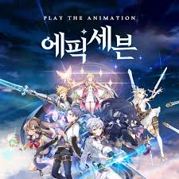

일단 시각적인 퀄리티만 보면 꽤 잘 만든 게임이란 평가가 많았다. 문제는 도를 넘어선 과금요소와 심각한 운영미숙 및 유저를 적대하는 태도로 게임을 망치고 있다는 것.출시 후 감행된 업데이트들은 대부분 유저들이 이득을 보는 부분을 제한하는 패치들 뿐이었고, 유저들이 호평할만한 부분은 UI 개선, 가시성 증진 등 인게임 컨텐츠나 과금요소와는 관련 없는 극히 일부분에 불과하다. 가차에 있어서는 출시 초기부터 이미 최악이었지만, 금빛 전승석 패치로 유저의 선택권을 제한하고, 2018년 10월 31일자로 기간 한정 가차까지 출시되면서 그야말로 최악으로 치닫아버렸다. 우스운 점은 에픽세븐은 20년 운영, 양산형 게임과는 다른 과금에 대한 신중한 접근을 하겠다며 언론 플레이를 했다는 점이다. 그런데 실제 결과물은 양산형 게임들을 다른 의미로 압도하는 창렬한 게임이 나왔으니 아이러니 그 자체.

에픽세븐 메인 일러스트